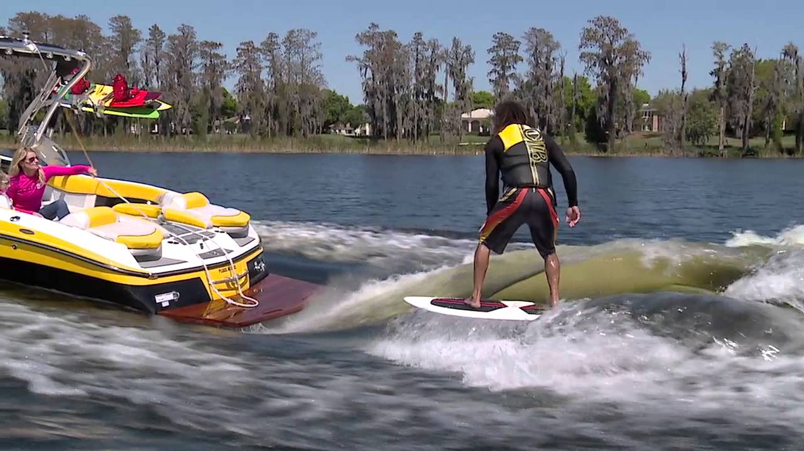
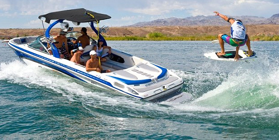

Wakesurfing
To wake surf, an in-board boat is highly recommend because it is safer. The motor is under the boat so you do not risk hitting the prop when falling. Also, an in-board boat has ballasts, which creates the surf wave behind the boat.
Wakesurfing does take some talent, but can be easy to learn. It can be easier if you know how to snowboard or skate board. A regular surf board can be used but, companies now make smaller surf boards that are meant for this sport. A skim board can also be used but it is more difficult and meant for tricks. The rope is about 15 feet long making you be about 10 feet back from the boat. The speed you ride at is about 10 mph.
Wakesurfing

